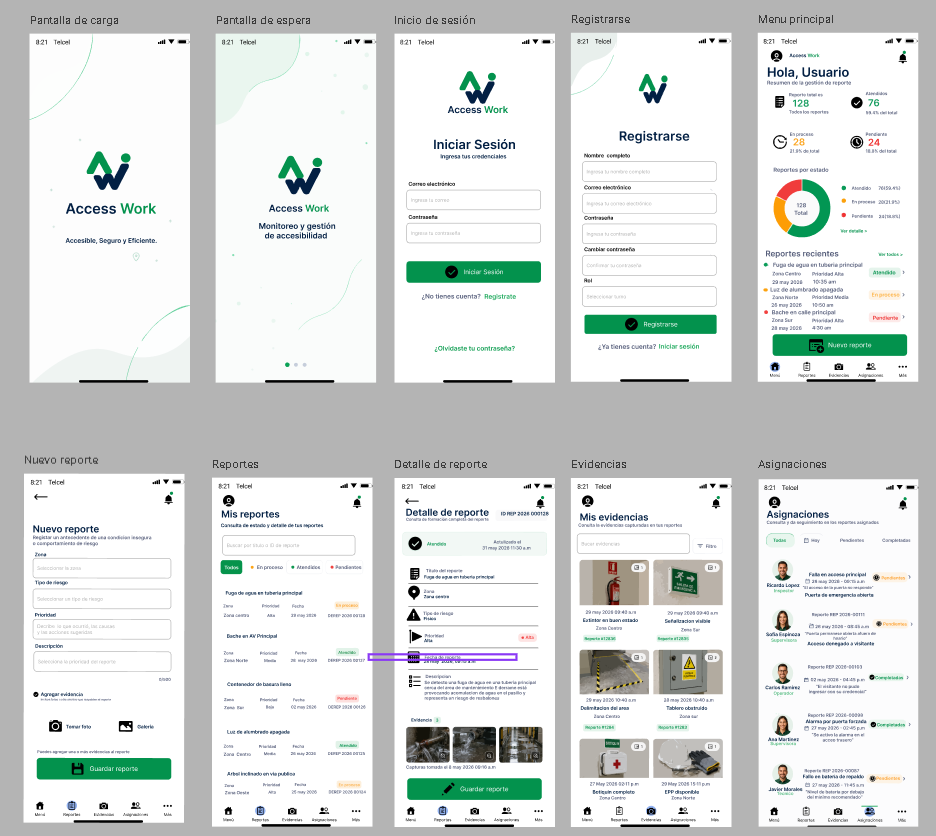

Programación
Programación estructurada y orientada a objetos.
Java · C · POO
MI CARTA DE PRESENTACIÓN
Mi formación conecta la programación, los proyectos escolares y mi interés por el idioma y la cultura japonesa.
Conoce AccessWorkPROYECTOS Y EXPERIENCIAS
Universidad Tecnológica de León · Software · Idiomas · Cultura
01 · PERFIL
Universidad Tecnológica de León
Estudio redes, programación estructurada, programación orientada a objetos, bases de datos y física.
Complemento mi carrera con cursos de programación y japonés, y aplico lo aprendido en proyectos escolares.
02 · HABILIDADES
Programación estructurada y orientada a objetos.
Java · C · POO
Formación en bases de datos relacionales.
MySQL · SQL
Fundamentos que acompañan mi aprendizaje en software.
Redes · Física
03 · PROYECTO INTEGRADOR

Propuesta de un sistema para ayudar a las empresas a prevenir riesgos y promover un ambiente laboral más accesible.
Un proyecto escolar que conecta el software con el cuidado de las personas.
04 · EXPERIENCIAS
Presentación de AccessWork y su enfoque en prevención de riesgos y accesibilidad laboral.
Practiqué el idioma e hice entrevistas en un evento de empresas automotrices japonesas.
Conocí la historia de dos jóvenes que emprendieron con éxito desde su proyecto integrador.
05 · IDIOMAS
Nivel intermedio · Tres años de estudio · Cursos de japonés
Certificación TOEFL